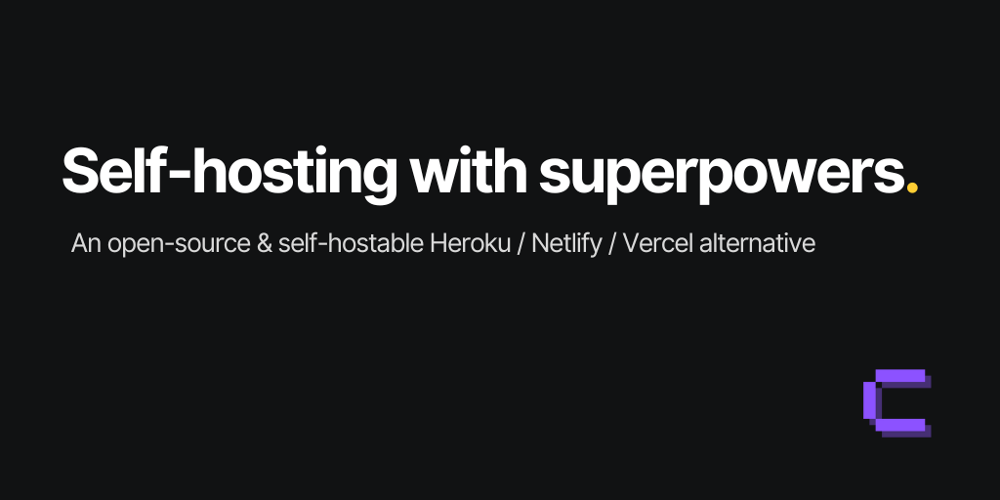

Self-Hosted Infrastructure · Homelab · 2026
Decision Framework 2026 · expedition depth · 116 citations
Recommended picks with native PR previews

Comparison matrix — 6 options × 10 criteria
| Option | PR Preview trigger | Traefik compat | GH integration | Idle RAM | Secrets | Backup / state | UI / Dashboard | Docker Compose | Stars | Custom glue remaining |
|---|---|---|---|---|---|---|---|---|---|---|
| Coolify v4 GA Apr 2026 |
Native
GitHub App PR comments |
❌ owns 80/443 Dedicated VM required | Excellent PR comments, auto-teardown | 800MB–1.2GB | Encrypted+BuildKit Encrypted at rest | Partial DB only — no vol backup | Full UI | Full 280+ templates | ⭐ 57k |
Minimal
DB-per-preview script; TTL/expiry cron |
| Dokploy Apr 2024 · Swarm |
Native
Webhook / GH App max-preview cap |
❌ bundles Traefik Dedicated VM required | Good 5 git providers | ~630MB Regression risk v0.27+ | Env vars No encrypted store | S3 + DB UI Vol backups + restore | Full UI | Swarm-native | ⭐ 35k |
Minimal
Wildcard DNS; max-preview config |
| DIY bash/compose zero platform overhead | GH Actions runner Self-hosted runner | ✓ labels only Shares host proxy | GH Actions + HMAC Token footgun applies | ~0MB No platform layer | Manual .env Plaintext on disk | Manual cron | None | Labels only Traefik labels in compose | — | ~200 lines deploy + teardown + cron |
| CapRover 2017 · slow-burn | REST API + Actions No native concept | ❌ owns nginx | Webhook One branch / app | ~350MB | Basic env vars No RBAC | Manual | UI (nginx) | Single-container No multi-service compose | ⭐ 15k | ~120 lines Full REST lifecycle |
| Dokku 2013 · 339 releases | Community plugin Fragile — concurrent push lock | ✓ nginx compat | Git-push SSH Token footgun applies | ~95MB | Env vars only No RBAC | Plugin-based | None (CLI) | Via plugin | ⭐ 32k | ~150 lines SSH wiring + GH Actions |
| Kamal 2 37signals · HEY.com | Full custom CI No platform awareness | ✓ kamal-proxy | GH Actions + registry Token footgun applies | ~0MB No platform layer | .kamal/secrets File on disk | None built-in | None (CLI/YAML) | YAML config | ⭐ 14k | Full lifecycle deploy + registry + remove |
Decision guide — pick this if…
Key risks and cross-cutting constraints
11 critical CVEs including RCE-as-root (CVSS 10.0) and SSH key leakage to low-privileged members. Patched in beta.445+ / v4 GA — but a meaningful signal about the platform's security posture. Dashboard must not be internet-exposed without a VPN or Cloudflare tunnel. [12][13]
Your existing Traefik reverse proxy cannot peacefully coexist with either native-preview option on the same host. Coolify hardcodes a port-80 validation check; Dokploy installs Traefik at setup time. Resolution: a dedicated KVM VM the PaaS fully controls. DIY bash, Dokku, and Kamal compose cleanly with an existing proxy via Docker labels. [3]
Idle RAM doubled in v0.27+; suspected cause identified but the issue was closed without a confirmed fix. This forces a de facto 4 GB minimum on a headroom-constrained Proxmox VM running two apps and five to ten concurrent previews. Verify it is resolved before deploying, or provision 6 GB+ as a buffer. [11]
GITHUB_TOKEN cannot trigger downstream GitHub Actions workflows on the same repository. CI jobs that depend on pull_request events emitted from the runner silently never fire. Fix: a GitHub App installation token generated in the workflow. Coolify and Dokploy bypass this entirely via webhook-based GitHub App flows. [14]
These three default to plaintext .env files on disk — fine for a solo homelab, a meaningful gap the moment a second person gets shell access. Layering Infisical on any of them closes the gap but adds operational surface. CapRover and Dokku lack role-based access entirely, so even encrypted env vars are visible to all deployers. [7]
Deep dives — 7 sub-topics
Install in a dedicated Debian VM, patch the Jan 2026 RCEs first. 47 citations · 9 min read
Triggers, deploy scripts, reverse proxy, cleanup, and when it beats Coolify. 15 citations · 7 min read
Docker-native PaaS (⭐ 34.6k), first-class PR previews, AI-powered CLI/MCP server. 18 citations · 4 min read
Battle-tested, resource-light, no native PR previews — poor fit for dynamic preview workflows in 2026. 10 citations · 4 min read
95 MB idle, Heroku-compatible git-push, excellent plugin ecosystem, no native PR preview. 12 citations · 4 min read
SSH-based IaC deployment — pick it for simplicity and zero overhead; pick Coolify for a PaaS dashboard. 7 citations · 2 min read
Env vars alone are insufficient for secrets in 2026 — use a secrets manager for sensitive data. 7 citations · 2 min read
Sources